Recibe tu propuesta
Propuesta con diseño, cantidad y necesidades de tu equipo.
 Recibir una propuesta
Recibir una propuesta 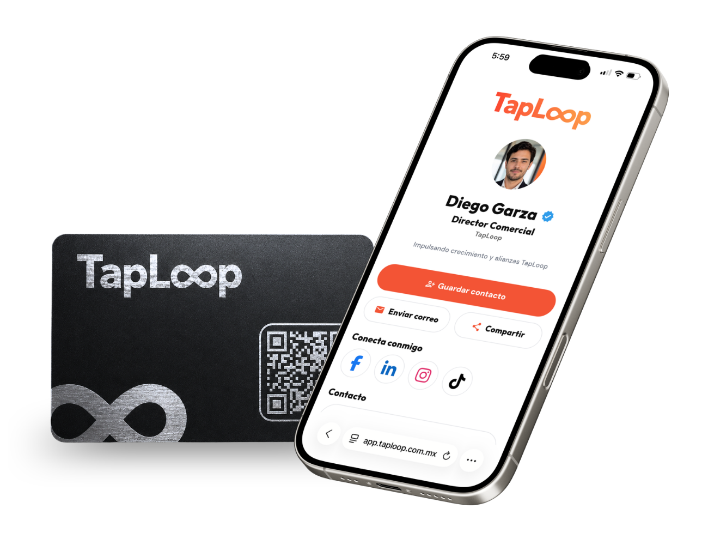
Tarjeta NFC metálica + perfil digital incluido
Comparte tu contacto con un toque y presenta tu marca con un acabado metálico diseñado para destacar.
Cotización personalizadapara tarjeta metálica con perfil digital incluido.
Compatible con iPhone y Android
Un acabado diseñado para destacar. Negro mate, grabado metálico y una sensación sólida en mano.
Una primera impresión que se siente diferente. Combina una tarjeta metálica de alta presencia con un perfil digital siempre actualizado.
Envíos a todo México. Entrega estimada de 3-5 días hábiles después de aprobar diseño y producción.
Después de tu compra nos compartes tu logo, colores y datos. Preparamos una muestra digital antes de producir tus tarjetas.
Cómo funciona
Propuesta con diseño, cantidad y necesidades de tu equipo.
Recibir una propuesta Configuramos tarjeta y perfil digital por colaborador.
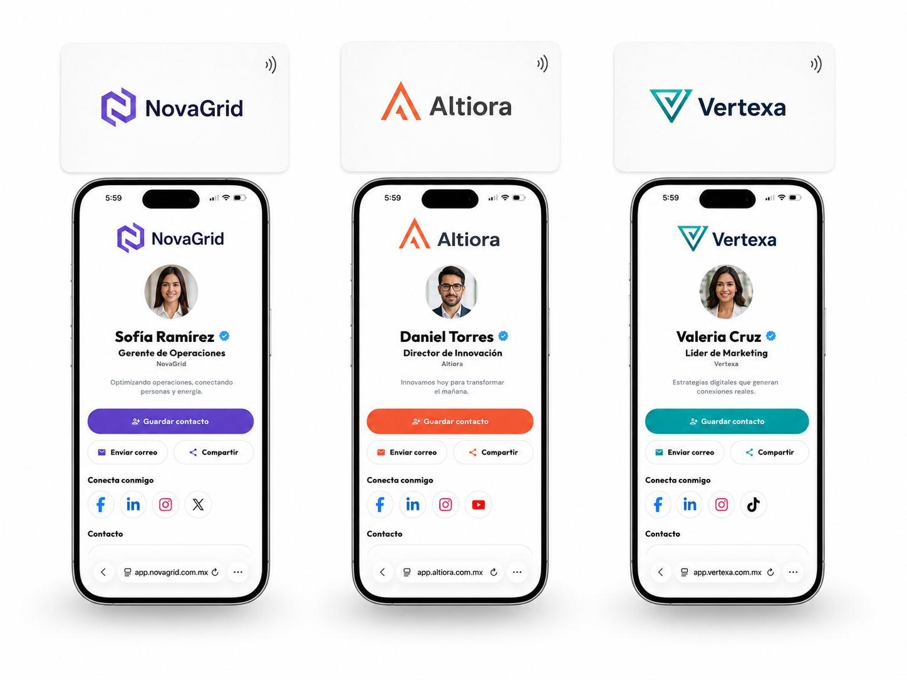
Fabricamos y enviamos todo listo en 3-5 días hábiles.

Comparte al instante y gestiona perfiles, métricas y leads.
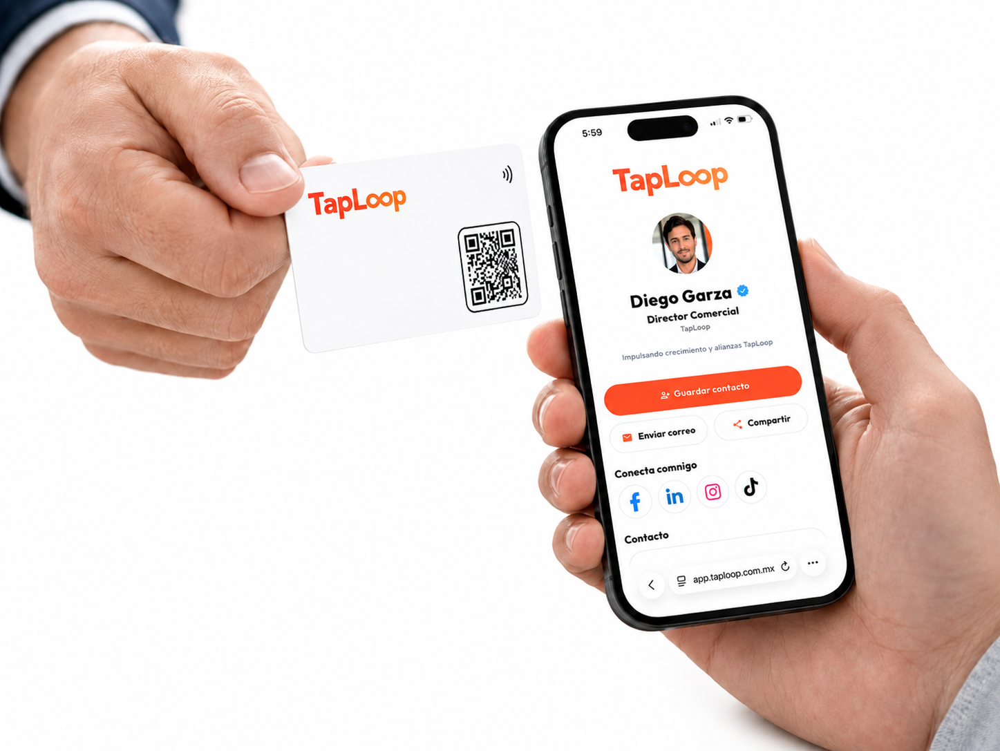
Personalización para empresas
Creamos tarjetas NFC y perfiles digitales alineados con tu identidad visual, logo, colores y datos profesionales.
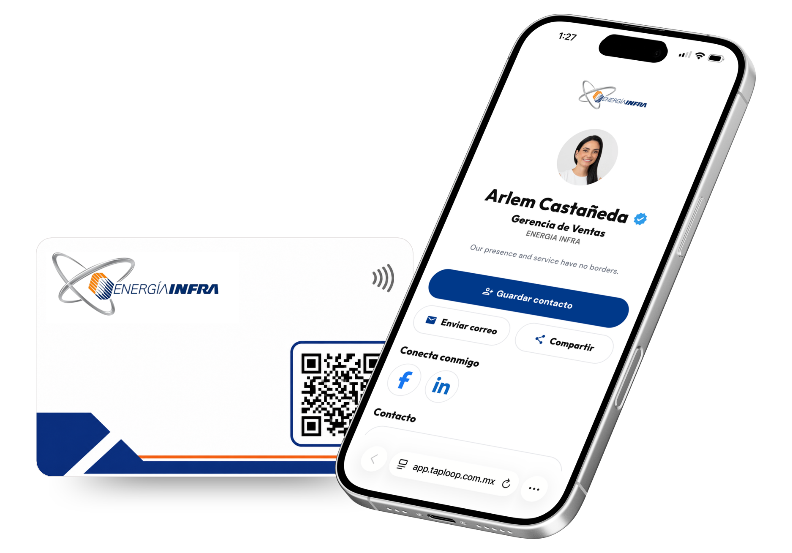
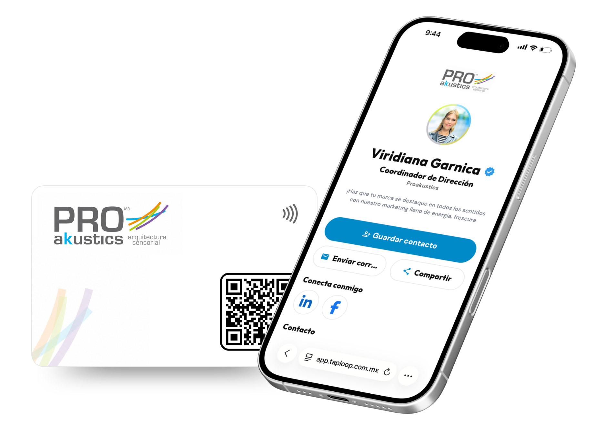
Cada interacción es una oportunidad para dejar una gran impresión.
Perfil digital TapLoop
Tu perfil y tus herramientas, siempre disponibles.
Cambia contacto, puesto y enlaces.
Todo en un mismo perfil.
La misma tarjeta abre la información actualizada.
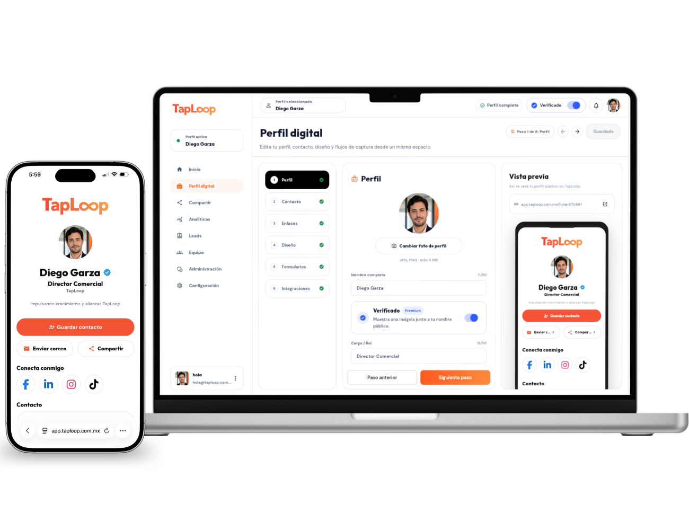
Plataforma TapLoop
Edita tu perfil, consulta métricas y administra tus contactos desde TapLoop.
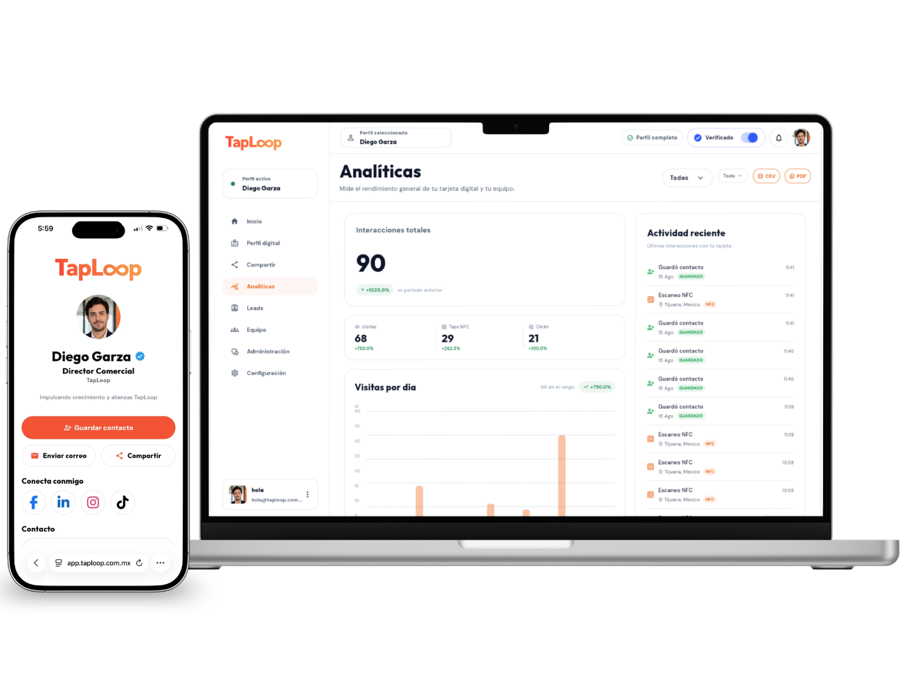
Consulta visitas, clics e interacciones para entender qué contactos muestran más interés.
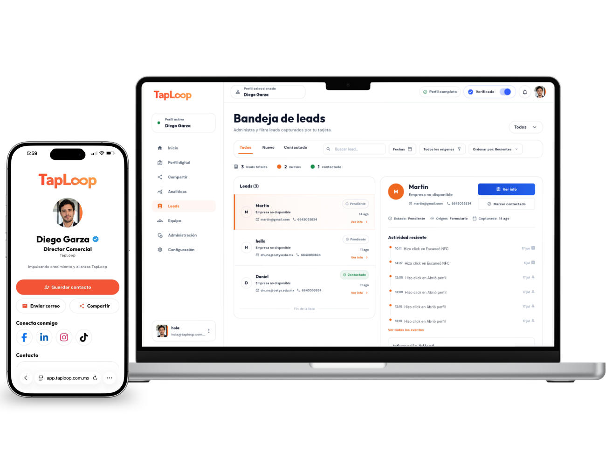
Recibe datos de contacto, organiza oportunidades y da seguimiento desde la plataforma.
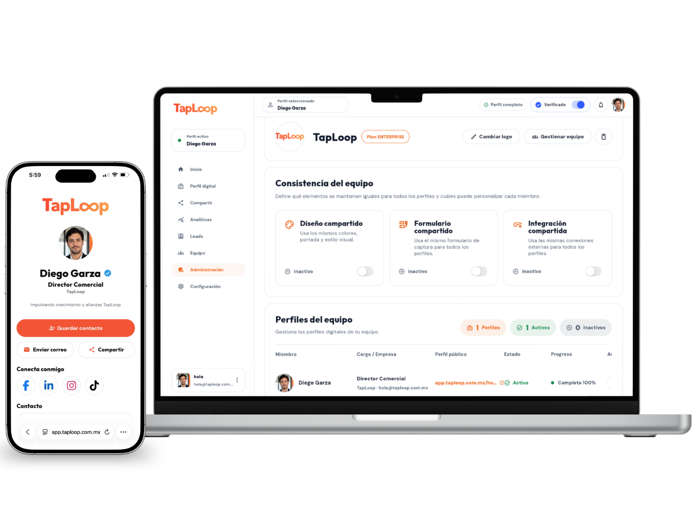
Administra perfiles, tarjetas y datos profesionales de cada colaborador desde un mismo lugar.
Una misma imagen de marca para todo tu equipo. Administra perfiles, tarjetas y datos profesionales desde un solo lugar.
Un perfil para cada integrante.
Logo, colores e información alineados con tu empresa.
Cambia puestos, teléfonos y enlaces sin reemplazar tarjetas.
Gestiona todo tu equipo desde un solo lugar.
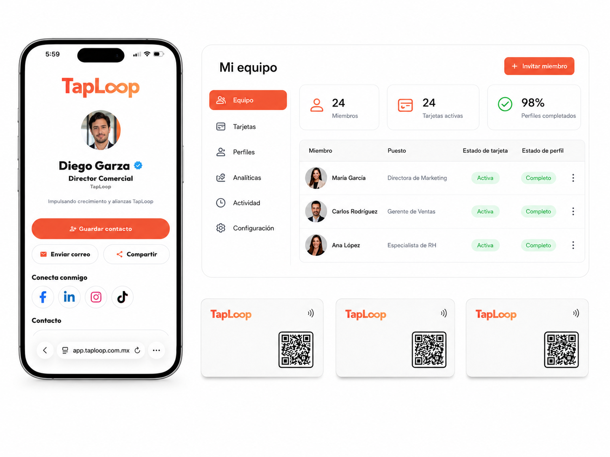
Trabajos realizados
Una muestra de proyectos reales en metal con acabado premium, QR y perfil digital activo.

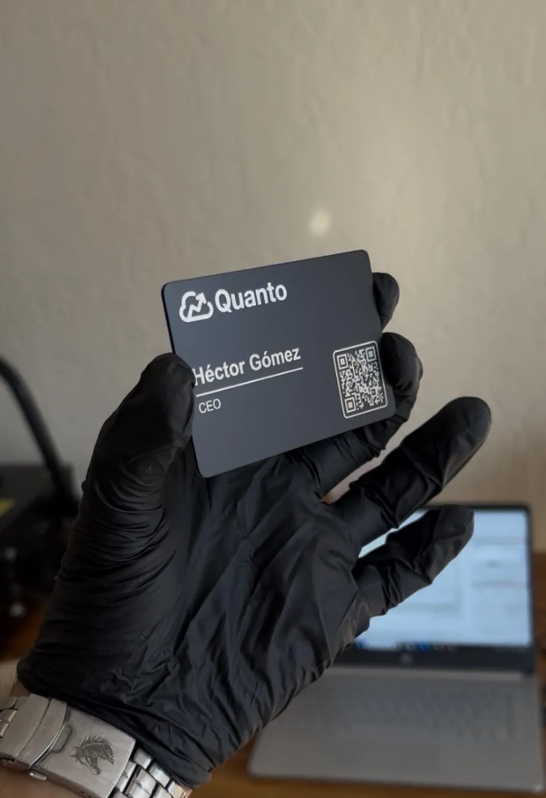
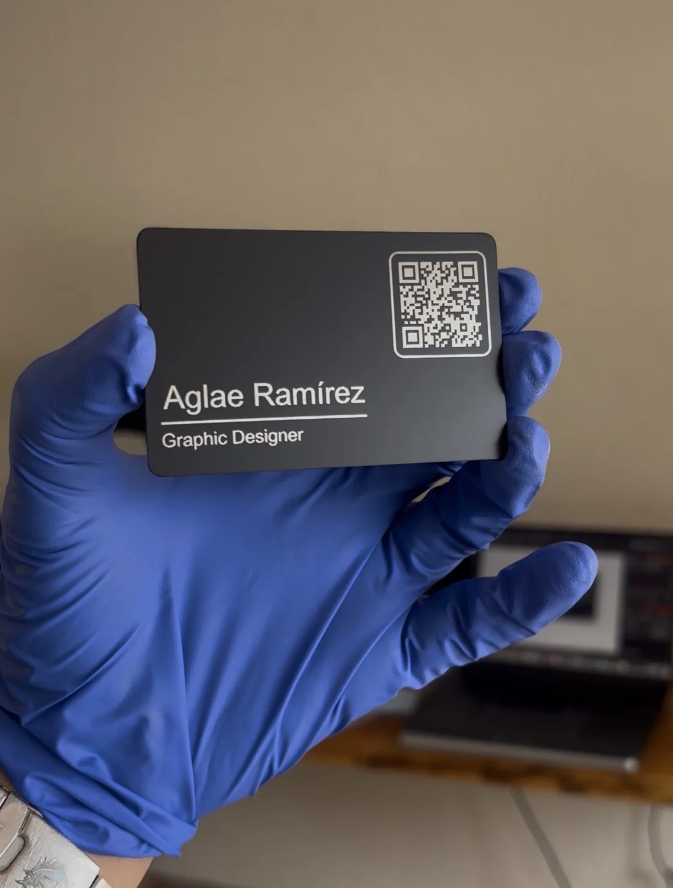
Clientes y equipos
Profesionales y equipos ya utilizan TapLoop para compartir su información y mantener una presencia consistente.
Respuestas clave sobre la tarjeta NFC Digital Metálica.
La tarjeta metálica ofrece mayor peso, presencia y un acabado premium. La opción PVC es más ligera y práctica para uso diario o implementaciones de mayor volumen.
Sí. Incluye chip NFC programado y código QR para abrir el mismo perfil digital desde teléfonos compatibles.
Sí. El diseño se adapta a tu logo, nombre, cargo, código QR y estilo visual, y el perfil digital incluye tus datos y enlaces.
Sí. Según la solución contratada, puedes actualizar los datos y enlaces del perfil digital sin reemplazar la tarjeta metálica.
Sí. Podemos crear una línea visual corporativa y personalizar cada tarjeta y perfil con los datos de directivos, socios o colaboradores clave.
La entrega estimada es de 3-5 días hábiles después de aprobar diseño y producción. El plazo puede variar según la cantidad y el destino.
Cuéntanos qué acabado y diseño buscas para preparar una propuesta premium para tu marca.